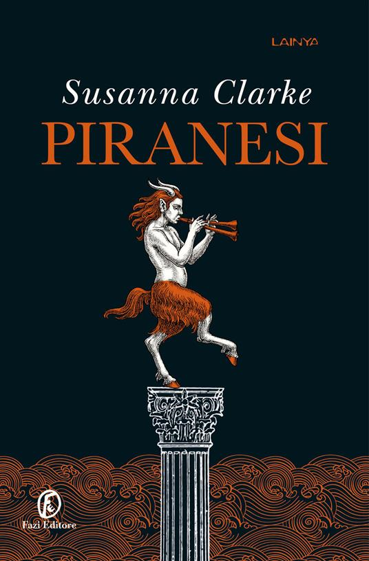

<html>
    <head>
        <title>Libros juveniles mas recomendados.</title>
        <link rel="stylesheet" type="text/css" href="salo.css"/>
    </head>
</html>
<body>
    <div id="principal">
    <h1>Libros juveniles mas recomendados:</h1>
    <p>A continuacion se encuentra unas lista de los 5 libros juveniles mas recomendados.</p>
    <ol>
    <li>PIRANESI, DE SUSANNA CLARKE:
        Piranesi es el nombre del protagonista de esta historia, un hombre que vive y explora una casa particular de la que describe cada rincón y cada habitación a través de sus propios diarios. Sin embargo, todos los martes y viernes se encuentra con el Otro al que le cuenta sus descubrimientos. Las personas que habitaban la casa antes que él han desaparecido y ahora parece que alguien ha regresado y se está poniendo en contacto con Piranesi. ¿Quién será? ¿Y qué querrá de él y de la Casa? Una historia enigmática y llena de suspenso.
        <br/>
       <center></center>
    <li>RUINA Y ASCENSO (GRISHA), DE LEIGH BARDUGO:
        A veces tratas de ser más fuerte de lo que pareces , tratas de no tener miedo y no dejarte abrumar por las pérdidas y dificultades que encuentras en tu vida. Eso es lo que le gustaría poder hacer a la joven Grisha , debilitada y obligada a aceptar la protección del Apparat y sus fanáticos. El Oscuro sigue presente y cada día fortalece su poder, una nueva batalla está en marcha y con ella la guerra inminente. ¿Podrá Grisha con la ayuda de Alina, su Evocaluce, luchar contra la oscuridad ? Solo tienes que averiguarlo.
    <br/>
    <center>></center>
    <li>REINO DE CENIZAS. DE SARAH J. MAAS:
        La reina Maeve se apoderó de ella y logró encerrar a Aelin , que estaba tratando de salvar a su pueblo, en un ataúd de hierro . De este ataúd, Aelin recibe constantes torturas porque no revela quién la ayudó y quién la sigue ayudando indirectamente. Su fuerza, sin embargo, no es inagotable, al contrario… su cuerpo empieza a estar fatigado y cansado y sus certezas mentales también empiezan a vacilar . ¿Será capaz de liberarse y llevar a su gente a un lugar seguro? Ella ni siquiera es la única que tiene que luchar en esta batalla, otros personajes también están tratando de recuperarse, pero la situación con la terrible Maeve es realmente compleja. Un nuevo capítulo dentro de la saga Trono de Cristal absolutamente imperdible.
        <br/>  
        <center></center>
    <li>LA CIUDAD DE LOS FANTASMAS, DE VICTORIA SCHWAB:
        En este libro se habla de fantasmas y de la posibilidad de cruzar el Velo que separa el mundo de los vivos del de los muertos . Cass puede hacer esto porque se ahogó en un terrible accidente. Lo que cambiará la suerte de Cass es la reubicación de su familia en Escocia, contratada por un programa de televisión sobre pueblos fantasmas. Cass llegará a Edimburgo donde podrá conocer a otras personas "especiales" como ella. Un libro verdaderamente electrizante que cuenta la historia de fantasmas entre castillos y cementerios.
        <br/>
        <center></center>
    <li>ASESINO DE BRUJAS: DIOSES Y MONSTRUOS, DE SHELBY MAHURIN:
        Este es el tercer y último capítulo de la saga de fantasía muy apreciada en todo el mundo. En esta nueva historia, Lou finalmente regresa a casa , después de tantas andanzas. Pero algo ha cambiado en Lou , ya no es la joven y tierna niña que todos conocían, la pequeña bruja que había logrado enamorar al cazador. Lou es diferente y tal vez ni el amor pueda hacerla volver a ser como antes.
        <br/>
        <center></center>
    </ol>
    </div>
    <div id="Barralat">
        <br/>
        <a href="salo-libros.html">Preciona para regresar a la pagina principal:</a>
    </div>
</body>
</html>